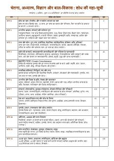
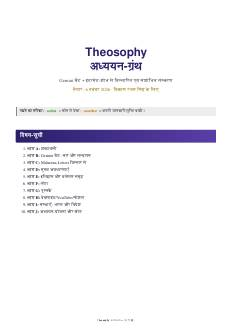
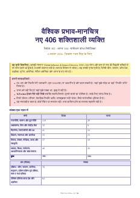
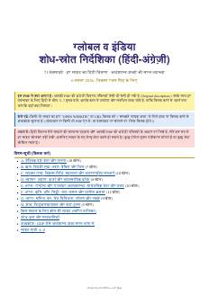
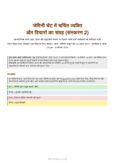
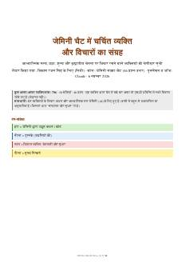

📚 PDF Library NEW
आपकी सभी तैयार PDF एक जगह, मूल रूप में (as-is)। PDF खोलने पर उनके लिंक क्लिक होते हैं: किसी भी लिंक पर क्लिक करके सीधे संबंधित वेबसाइट पर जाएँ।
कैसे उपयोग करें: "नए टैब में खोलें" सबसे भरोसेमंद है (मोबाइल और Mac दोनों पर)। "यहीं देखें" पेज के भीतर PDF दिखाता है; कुछ मोबाइल ब्राउज़र इसे नहीं दिखाते, तब पहला बटन इस्तेमाल करें। PDF में नाम खोजने के लिए Ctrl/Cmd + F।

महा-सूची (मूल PDF)
- अध्यात्म, आश्रम, दर्शन, संत, समाज-सेवा, कमाई-योजनाओं का मूल संग्रह
- वेबसाइट की ज़्यादातर ज्ञान-श्रेणियाँ इसी से बनी हैं
- पहले से साइट पर थी; नीचे के PDF इसके बाद के हैं

Theosophy अध्ययन-ग्रंथ
- Theosophy शब्दावली, Mahatma Letters (Barker/Chronological क्रम), अवधारणाएँ
- Gemini चैट का सार और सत्यापन-तालिका
- लोग, पुस्तकें, वेबसाइट, संस्थाएँ (भारत और विदेश) और सदस्यता
- पूरा हिंदी-अंग्रेज़ी, क्लिक-योग्य लिंक

वैश्विक प्रभाव-मानचित्र: 406 नए व्यक्ति
- विदेश 302 + भारत 104, श्रेणीवार
- देश, संस्था, काम/थीम, भविष्य-प्रोजेक्ट, दल, लिंक
- आपकी 200-लोगों वाली निर्देशिका की पूरक सूची
- नाम-सूची A–Z में नाम पर क्लिक = कार्ड

शोध-स्रोत निर्देशिका (71 वेबसाइट)
- हर वेबसाइट: अंग्रेज़ी विवरण जैसा-का-तैसा + हिंदी में 5–7 मुख्य बातें
- क्लिक से पहले जानें: थीम, किस काम में उपयोगी
- 53 अर्थशास्त्र-शब्द (GDP, PPP, महँगाई…) सरल भाषा में

Gemini चैट: लोग और विचार (v2, 786 व्यक्ति)
- दर्शन की शाखाएँ (Determinism, Free Will, Karma, Stoic…) और 786 व्यक्ति
- हर व्यक्ति: जन्म/निधन, कार्य, विचार, संघर्ष, लिंक
- Searchable PDF: Ctrl/Cmd+F से नाम खोजें

Gemini चैट: लोगों की सूची (v1, पहला संस्करण)
- पहला संस्करण (796 नाम), जैसा बना था वैसा रखा है
- नया और बेहतर संस्करण ऊपर v2 है
इन PDF के साथ वेबसाइट पर इनसे बने खोजने-योग्य हब भी हैं: Theosophy · लोग (406) · शोध-स्रोत (71)। नीचे Site Map में हर पेज का विवरण है।